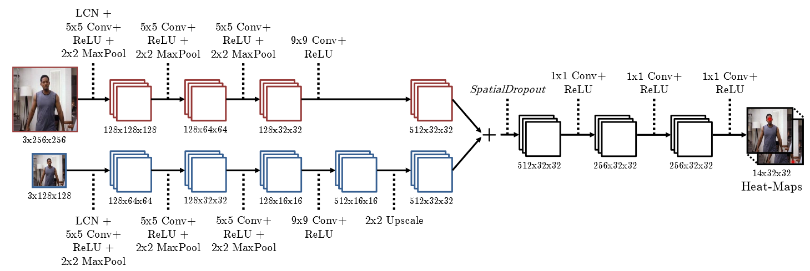
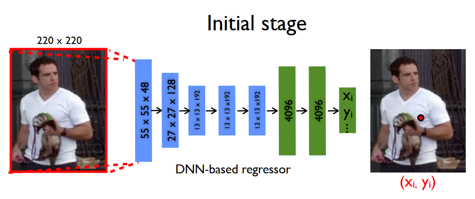

1. 基本信息
2014 CVPR
地址：https://arxiv.org/abs/1411.4280
将离散热图引入损失函数。
2. 模型
2.1. First Stage

2.1.1. 多分辨率部分
X：不同的分辨率的full image
2.1.2. 单分辨率部分
X：图像的RGB信息
Y：关节的坐标信息
数据预处理：需要先识别出图像中的人，以及把人框住的box。X和Y分别相对于box做normalize。
输入层：完整的图像的normalize，即box
中间层：Alexnet(7层)
输出层：关节在box中的坐标
预期输出：ground truth的normalize
损失函数：输出与预期输出之间的L2 loss

优点：
- 实验证明normalize之后效果更好
- 每个关节都是基于full Image预测的，有holistic reasoning的效果
- 省去了传统方法的大量规则的设计
- 图像中有部分关节没有label的情况也能hold住。
缺点：
- 要求box的识别是可靠的
- 只能做单人识别
- Sequence Stage有做data augment，为什么First Stage不这么做？
- 相对于传统方法，需要大量训练数据
2.2. Sequence Stage
X：图像的RGB信息
Y：关节的坐标信息
数据预处理：X和Y分别相对于box做normalize。和First Stage的区别是box的设定。此处的box不再是整个人。box是的中心点要refine的关节在上一个stage中的预测点。box的宽和高根据人的大小来设定。
输入层：完整的图像crop之后的box
中间层：Alexnet(7层)，同First Stage
输出层：关节在box中的坐标
预期输出：ground truth基于box的normalize，再增加一定量的noise
损失函数：输出与预期输出之间的L2 loss
优点：
- 每次都基于上一次的subimage做refine，结果会越来越准确
- 对预期输出增加一定量的noise，有data augment的作用，提升泛化能力。
缺点：
- 由于每个关节的box是不同的，一次只能针对一个关节做Refine
- 如果上一个stage预测结果与ground truth偏差比较大，会影响这个stage的准确性
- refine所使用的是原图像的crop，文中没有提到提升sub-image的分辨率，因此信息是变少了。但若有提升分辨率，那么数据量没有少，就没有解决文中所说的“the network has limited capacity to look at detail”的问题了
- 如果box中有别人的关节干扰会怎样？会不会box被跑偏？
- 相对于传统方法，需要大量训练数据
3. 结果与分析
Table 1表明Deep Pose整体表现不错。
作者认为表现不错的原因是：Stage 1以整张图像作为输入，可以学到holistic reasoning。代价是更多的训练数据和更长的训练时间，但这个维度的比较在文中没有体现。Figure 3表明在FLIC数据集上，当阈值小的时候，各种方法相差不多。当阈值大时，Deep Pose表现出优势。
Figure 4表明在LSP数据集上，当阈值小的时候，Deep Pose略差。当阈值大时，Deep Pose表现出优势。说明Deep Pose精度不够。
Figure 5表明Sequence Stage对First Stage的结果有refine作用，且主要的提升在第2个Stage。
作者认为这是因为Stage 2用的是Stage的smaller sub-image，而且其它Stage用的image与前一个Stage大小相同，只是内容有偏移。Fiture 7表明，在不同数据集的泛化能力上，当阈值小的时候，Deep Pose略差。当阈值大时，Deep Pose表现出优势。